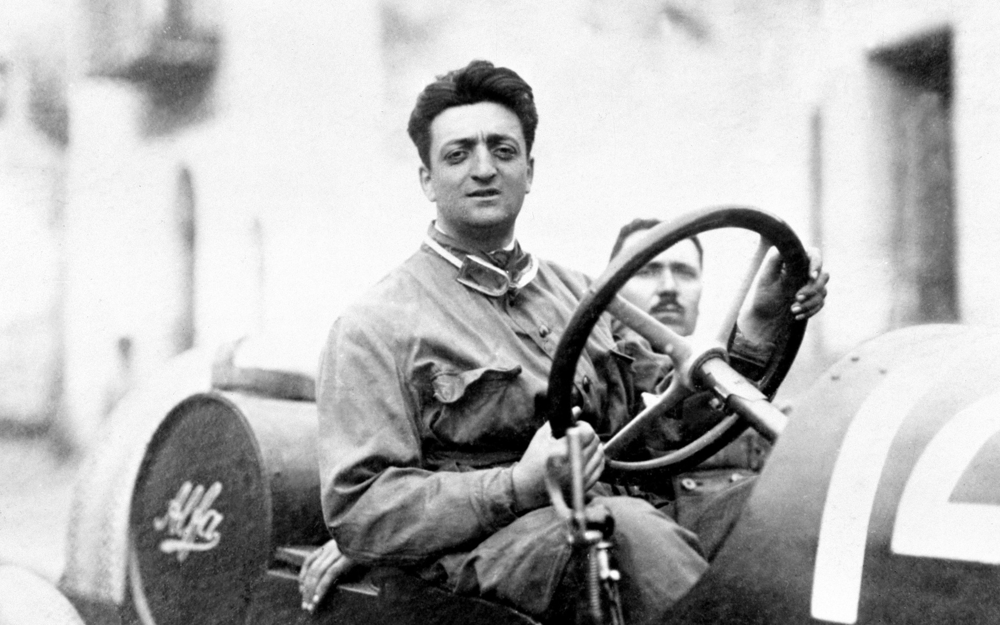
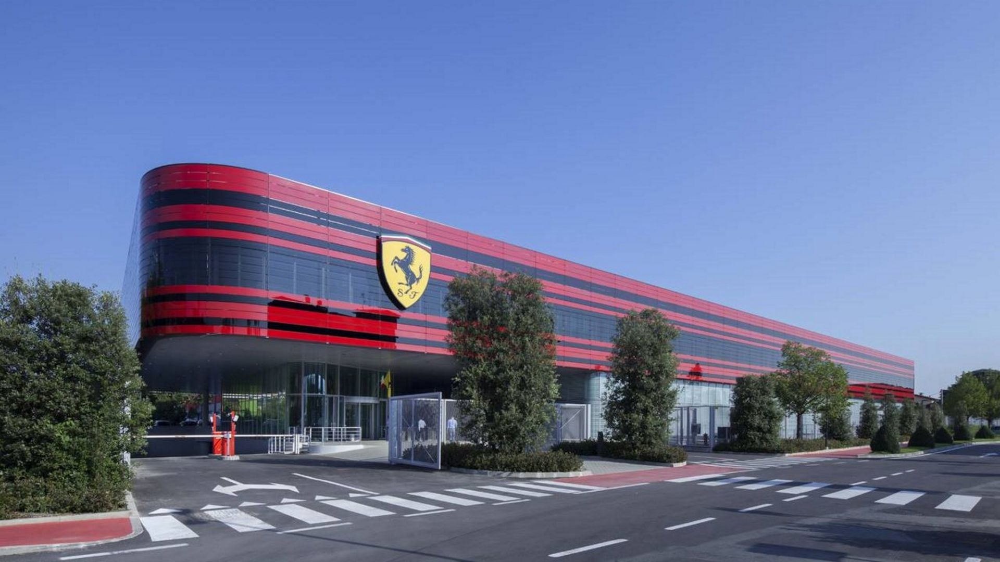

Ferrari S.p.A. est un constructeur automobile italien installé à Maranello en Italie, fondée par Enzo Ferrari en 1947.L'histoire de Ferrari est indissociable de celle de la Scuderia Ferrari, écurie automobile évoluant en Sport-prototypes tout comme en grand tourisme et plus tard en Formule 1 depuis 1929, avec laquelle le constructeur a connu ses plus grands succès. Forte de son expérience en compétition, la marque au « cheval cabré » (« cavallino rampante ») y puise les techniques équipant ses modèles de série, comme en attestent les Ferrari 288 GTO, F50 ou encore Enzo, aux performances sportives exceptionnelles lors de leur lancement.

L'entreprise est située à Maranello, en Émilie-Romagne, à 35 km de Bologne. Enzo Ferrari y fit construire de toutes nouvelles installations, au lendemain de la Seconde Guerre mondiale, sur des terrains qu'il avait acquis pendant la guerre dans ce gros bourg situé à 18 km au sud de Modène, où furent construites les premières voitures portant le nom « Ferrari ». Ferrari depuis le début de l'année 2016, ne fait plus partie du groupe Fiat. Elle fournissait des moteurs à peu près 7 500 par an et la peinture des carrosseries de Maserati, ancienne autre filiale du groupe. En juin 2002, Fiat, grevé par un endettement colossal, avait dû se résoudre à revendre 34 % de Ferrari au groupe financier italien Mediobanca pour un montant de 775 millions d'euros
